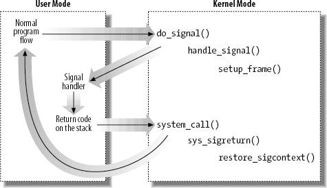
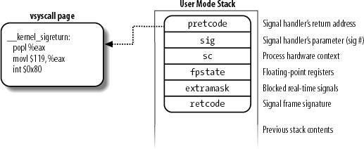

{% include JB/setup %}
{% raw %}
<div>


<a name="understandlk-CHP-11-SECT-3"></a>
<h3 class="docSection1Title">11.3. Delivering a Signal</h3><a name="IDX-CHP-11-2745"></a>
<a name="IDX-CHP-11-2746"></a>
<p class="docText1">We assume that the kernel noticed the arrival of a signal and invoked one of the functions mentioned in the previous sections to prepare the process descriptor of the process that is supposed to receive the signal. But in case that process was not running on the CPU at that moment, the kernel deferred the task of delivering<a name="IDX-CHP-11-2747"></a> 
 the signal. We now turn to the activities that the kernel performs to ensure that pending signals of a process are handled.</p>
<p class="docText1">As mentioned in the section "<a class="pcalibre5 docLink pcalibre1" href="understandlk-CHP-4-SECT-9.html#understandlk-CHP-4-SECT-9">Returning from Interrupts and Exceptions</a>" in <a class="pcalibre5 docLink pcalibre1" href="understandlk-CHP-4.html#understandlk-CHP-4">Chapter 4</a>, the kernel checks the value of the <tt class="calibre25">TIF_SIGPENDING</tt> flag of the process before allowing the process to resume its execution in User Mode. Thus, the kernel checks for the existence of pending signals every time it finishes handling an interrupt or an exception.</p>
<p class="docText1">To handle the nonblocked pending signals, the kernel invokes the <tt class="calibre25">do_signal( )</tt> function, which receives two parameters:</p>
<dl class="docText1"><dt class="calibre7"><br class="calibre7"/><p class="calibre14"><span class="docPubcolor"><span class="docPubcolor"><span class="docMonofont">regs</span></span></span></p></dt>
<dd class="calibre20"><p class="docList">The address of the stack area where the User Mode register contents of the current process are saved.</p></dd><dt class="calibre7"><br class="calibre7"/><p class="calibre14"><span class="docPubcolor"><span class="docPubcolor"><span class="docMonofont">oldset</span></span></span></p></dt>
<dd class="calibre20"><p class="docList">The address of a variable where the function is supposed to save the bit mask array of blocked signals. It is <tt class="calibre25">NULL</tt> if there is no need to save the bit mask array.</p></dd></dl>
<p class="docText1">Our description of the <tt class="calibre25">do_signal( )</tt> function will focus on the general mechanism of signal delivery; the actual code is burdened with lots of details dealing with race conditions and other special casessuch as freezing the system, generating core dumps, stopping and killing a whole thread group, and so on. We will quietly skip all these details.</p>
<p class="docText1">As already mentioned, the <tt class="calibre25">do_signal( )</tt> function is usually only invoked when the CPU is going to return in User Mode. For that reason, if an interrupt handler invokes <tt class="calibre25">do_signal( )</tt>, the function simply returns:</p>
<pre class="calibre27">
    if ((regs-&gt;xcs &amp; 3) != 3)
        return 1;</pre><br class="calibre7"/>
<p class="docText1">If the <tt class="calibre25">oldset</tt> parameter is <tt class="calibre25">NULL</tt>, the function initializes it with the address of the <tt class="calibre25">current-&gt;blocked</tt> field:</p>
<pre class="calibre27">
    if (!oldset)
        oldset = &amp;current-&gt;blocked;</pre><br class="calibre7"/>
<p class="docText1">The heart of the <tt class="calibre25">do_signal( )</tt> function consists of a loop that repeatedly invokes the <tt class="calibre25">dequeue_signal( )</tt> function until no nonblocked pending signals are left in both the private and shared pending signal queues. The return code of <tt class="calibre25">dequeue_signal( )</tt> is stored in the <tt class="calibre25">signr</tt> local variable. If its value is 0, it means that all pending signals have been handled and <tt class="calibre25">do_signal( )</tt> can finish. As long as a nonzero value is returned, a pending signal is waiting to be handled. <tt class="calibre25">dequeue_signal( )</tt> is invoked again after <tt class="calibre25">do_signal( )</tt> handles the current signal.</p>
<p class="docText1">The <tt class="calibre25">dequeue_signal( )</tt> considers first all signals in the private pending signal queue, starting from the lowest-numbered signal, then the signals in the shared queue. It updates the data structures to indicate that the signal is no longer pending and returns its number. This task involves clearing the corresponding bit in <tt class="calibre25">current-&gt;pending.signal</tt> or <tt class="calibre25">current-&gt;signal-&gt;shared_pending.signal</tt>, and invoking <tt class="calibre25">recalc_sigpending( )</tt> to update the value of the <tt class="calibre25">TIF_SIGPENDING</tt> flag.</p>
<p class="docText1">Let's see how the <tt class="calibre25">do_signal( )</tt> function handles each pending signal whose number is returned by <tt class="calibre25">dequeue_signal( )</tt>. First, it checks whether the <tt class="calibre25">current</tt> receiver process is being monitored by some other process; in this case, <tt class="calibre25">do_signal( )</tt> invokes <tt class="calibre25">do_notify_parent_cldstop( )</tt> and <tt class="calibre25">schedule( )</tt> to make the monitoring process aware of the signal handling.</p>
<p class="docText1">Then <tt class="calibre25">do_signal( )</tt> loads the <tt class="calibre25">ka</tt> local variable with the address of the <tt class="calibre25">k_sigaction</tt> data structure of the signal to be handled:</p>
<pre class="calibre27">
    ka = &amp;current-&gt;sig-&gt;action[signr-1];</pre><br class="calibre7"/>
<p class="docText1">Depending on the contents, three kinds of actions may be performed: ignoring<a name="IDX-CHP-11-2748"></a> 
 the signal, executing a default action, or executing a signal handler.</p>
<p class="docText1">When a delivered signal is explicitly ignored, the <tt class="calibre25">do_signal( )</tt> function simply continues with a new execution of the loop and therefore considers another pending signal:</p>
<pre class="calibre27">
    if (ka-&gt;sa.sa_handler == SIG_IGN)
        continue;</pre><br class="calibre7"/>
<p class="docText1">In the following two sections we will describe how a default action and a signal handler are executed.</p>
<a name="understandlk-CHP-11-SECT-3.1"></a>
<h4 class="docSection2Title">11.3.1. Executing the Default Action for the Signal</h4><a name="IDX-CHP-11-2749"></a>
<a name="IDX-CHP-11-2750"></a>
<a name="IDX-CHP-11-2751"></a>
<a name="IDX-CHP-11-2752"></a>
<a name="IDX-CHP-11-2753"></a>
<a name="IDX-CHP-11-2754"></a>
<a name="IDX-CHP-11-2755"></a>
<p class="docText1">If <tt class="calibre25">ka-&gt;sa.sa_handler</tt> is equal to <tt class="calibre25">SIG_DFL</tt>, <tt class="calibre25">do_signal( )</tt> must perform the default action of the signal. The only exception comes when the receiving process is <span class="docEmphasis">init</span>, in which case the signal is discarded as described in the earlier section "<a class="pcalibre5 docLink pcalibre1" href="understandlk-CHP-11-SECT-1.html#understandlk-CHP-11-SECT-1.1">Actions Performed upon Delivering a Signal</a>":</p>
<pre class="calibre27">
    if (current-&gt;pid == 1)
        continue;</pre><br class="calibre7"/>
<p class="docText1">For other processes, the signals whose default action is "ignore" are also easily handled:</p>
<pre class="calibre27">
    if (signr==SIGCONT || signr==SIGCHLD ||
            signr==SIGWINCH || signr==SIGURG)
        continue;</pre><br class="calibre7"/>
<p class="docText1">The signals whose default action is "stop" may stop all processes in the thread group. To do this, <tt class="calibre25">do_signal( )</tt> sets their states to <tt class="calibre25">TASK_STOPPED</tt> and then invokes the <tt class="calibre25">schedule( )</tt> function (see the section "<a class="pcalibre5 docLink pcalibre1" href="understandlk-CHP-7-SECT-4.html#understandlk-CHP-7-SECT-4.4">The schedule( ) Function</a>" in <a class="pcalibre5 docLink pcalibre1" href="understandlk-CHP-7.html#understandlk-CHP-7">Chapter 7</a>):</p>
<pre class="calibre27">
    if (signr==SIGSTOP || signr==SIGTSTP ||
            signr==SIGTTIN || signr==SIGTTOU) {
        if (signr != SIGSTOP &amp;&amp;
               is_orphaned_pgrp(current-&gt;signal-&gt;pgrp))
            continue;
        do_signal_stop(signr);
    }</pre><br class="calibre7"/>
<p class="docText1">The difference between <tt class="calibre25">SIGSTOP</tt> and the other signals is subtle: <tt class="calibre25">SIGSTOP</tt> always stops the thread group, while the other signals stop the thread group only if it is not in an "orphaned process group." The POSIX standard specifies that a process group is <span class="docEmphasis">not</span> orphaned as long as there is a process in the group that has a parent in a different process group but in the same session. Thus, if the parent process dies but the user who started the process is still logged in, the process group is not orphaned.</p>
<p class="docText1">The <tt class="calibre25">do_signal_stop( )</tt> function checks whether <tt class="calibre25">current</tt> is the first process being stopped in the thread group. If so, it activates a "group stop": essentially, the function sets the <tt class="calibre25">group_stop_count</tt> field in the signal descriptor to a positive value, and awakens each process in the thread group. Each such process, in turn, looks at this field to recognize that a group stop is in progress, changes its state to <tt class="calibre25">TASK_STOPPED</tt>, and invokes <tt class="calibre25">schedule()</tt>. The <tt class="calibre25">do_signal_stop( )</tt> function also sends a <tt class="calibre25">SIGCHLD</tt> signal to the parent process of the thread group leader, unless the parent has set the <tt class="calibre25">SA_NOCLDSTOP</tt> flag of <tt class="calibre25">SIGCHLD</tt>.</p>
<p class="docText1">The signals whose default action is "dump" may create a <tt class="calibre25">core</tt> file in the process working directory; this file lists the complete contents of the process's address space and CPU registers. After <tt class="calibre25">do_signal( )</tt> creates the core file, it kills the thread group. The default action of the remaining 18 signals is "terminate," which consists of simply killing the thread group. To kill the whole thread group, the function invokes <tt class="calibre25">do_group_exit( )</tt>, which executes a clean "group exit" procedure (see the section "<a class="pcalibre5 docLink pcalibre1" href="understandlk-CHP-3-SECT-5.html#understandlk-CHP-3-SECT-5.1">Process Termination</a>" in <a class="pcalibre5 docLink pcalibre1" href="understandlk-CHP-3.html#understandlk-CHP-3">Chapter 3</a>).</p>
<a name="understandlk-CHP-11-SECT-3.2"></a>
<h4 class="docSection2Title">11.3.2. Catching the Signal</h4><a name="IDX-CHP-11-2756"></a>
<p class="docText1">If a handler has been established for the signal, the <tt class="calibre25">do_signal( )</tt> function must enforce its execution. It does this by invoking <tt class="calibre25">handle_signal( )</tt>:</p>
<pre class="calibre27">
    handle_signal(signr, &amp;info, &amp;ka, oldset, regs);
    if (ka-&gt;sa.sa_flags &amp; SA_ONESHOT)
        ka-&gt;sa.sa_handler = SIG_DFL;
    return 1;
</pre><br class="calibre7"/>
<p class="docText1">If the received signal has the <tt class="calibre25">SA_ONESHOT</tt> flag set, it must be reset to its default action, so that further occurrences of the same signal will not trigger again the execution of the signal handler. Notice how <tt class="calibre25">do_signal( )</tt> returns after having handled a single signal. Other pending signals won't be considered until the next invocation of <tt class="calibre25">do_signal( )</tt>. This approach ensures that real-time signals will be dealt with in the proper order.</p>
<p class="docText1">Executing a signal handler is a rather complex task because of the need to juggle stacks carefully while switching between User Mode and Kernel Mode. We explain exactly what is entailed here:</p>
<p class="docText1">Signal handlers are functions defined by User Mode processes and included in the User Mode code segment. The <tt class="calibre25">handle_signal( )</tt> function runs in Kernel Mode while signal handlers run in User Mode; this means that the current process must first execute the signal handler in User Mode before being allowed to resume its "normal" execution. Moreover, when the kernel attempts to resume the normal execution of the process, the Kernel Mode stack no longer contains the hardware context of the interrupted program, because the Kernel Mode stack is emptied at every transition from User Mode to Kernel Mode.</p>
<p class="docText1">An additional complication is that signal handlers may invoke system calls. In this case, after the service routine executes, control must be returned to the signal handler instead of to the normal flow of code of the interrupted program.</p>
<p class="docText1">The solution adopted in Linux consists of copying the hardware context saved in the Kernel Mode stack onto the User Mode stack of the current process. The User Mode stack is also modified in such a way that, when the signal handler terminates, the <tt class="calibre25">sigreturn( )</tt><a name="IDX-CHP-11-2757"></a> 
 system call is automatically invoked to copy the hardware context back on the Kernel Mode stack and to restore the original content of the User Mode stack.</p>
<p class="docText1"><a class="pcalibre5 docLink pcalibre1" href="#understandlk-CHP-11-FIG-2">Figure 11-2</a> illustrates the flow of execution of the functions involved in catching<a name="IDX-CHP-11-2758"></a> 
 a signal. A nonblocked signal is sent to a process. When an interrupt or exception occurs, the process switches into Kernel Mode. Right before returning to User Mode, the kernel executes the <tt class="calibre25">do_signal( )</tt> function, which in turn handles the signal (by invoking <tt class="calibre25">handle_signal( )</tt>) and sets up the User Mode stack (by invoking <tt class="calibre25">setup_frame( )</tt> or <tt class="calibre25">setup_rt_frame( )</tt>). When the process switches again to User Mode, it starts executing the signal handler, because the handler's starting address was forced into the program counter. When that function terminates, the return code placed on the User Mode stack by the <tt class="calibre25">setup_frame( )</tt> or <tt class="calibre25">setup_rt_frame( )</tt> function is executed. This code invokes the <tt class="calibre25">sigreturn( )</tt><a name="IDX-CHP-11-2759"></a> 
 or the <tt class="calibre25">rt_sigreturn( )</tt><a name="IDX-CHP-11-2760"></a> 
 system call; the corresponding service routines copy the hardware context of the normal program to the Kernel Mode stack and restore the User Mode stack back to its original state (by invoking <tt class="calibre25">restore_sigcontext( )</tt>). When the system call terminates, the normal program can thus resume its execution.</p>
<a name="understandlk-CHP-11-FIG-2"></a><p class="calibre14"><center class="calibre8">
<h5 class="docFigureTitle">Figure 11-2. Catching a signal</h5>
</center></p><br class="calibre7"/>
<p class="docText1">Let's now examine in detail how this scheme is carried out.</p>
<a name="understandlk-CHP-11-SECT-3.2.1"></a>
<h5 class="docSection3Title">11.3.2.1. Setting up the frame</h5><a name="IDX-CHP-11-2761"></a>
<a name="IDX-CHP-11-2762"></a>
<a name="IDX-CHP-11-2763"></a>
<a name="IDX-CHP-11-2764"></a>
<a name="IDX-CHP-11-2765"></a>
<a name="IDX-CHP-11-2766"></a>
<p class="docText1">To properly set the User Mode stack of the process, the <tt class="calibre25">handle_signal( )</tt> function invokes either <tt class="calibre25">setup_frame( )</tt> (for signals that do not require a <tt class="calibre25">siginfo_t</tt> table; see the section "<a class="pcalibre5 docLink pcalibre1" href="understandlk-CHP-11-SECT-4.html#understandlk-CHP-11-SECT-4">System Calls Related to Signal Handling</a>" later in this chapter) or <tt class="calibre25">setup_rt_frame( )</tt> (for signals that do require a <tt class="calibre25">siginfo_t</tt> table). To choose among these two functions, the kernel checks the value of the <tt class="calibre25">SA_SIGINFO</tt> flag in the <tt class="calibre25">sa_flags</tt> field of the <tt class="calibre25">sigaction</tt> table associated with the signal.</p>
<p class="docText1">The <tt class="calibre25">setup_frame( )</tt> function receives four parameters, which have the following meanings:</p>
<dl class="docText1"><dt class="calibre7"><br class="calibre7"/><p class="calibre14"><span class="docPubcolor"><span class="docPubcolor"><span class="docMonofont">sig</span></span></span></p></dt>
<dd class="calibre20"><p class="docList">Signal number</p></dd><dt class="calibre7"><br class="calibre7"/><p class="calibre14"><span class="docPubcolor"><span class="docPubcolor"><span class="docMonofont">ka</span></span></span></p></dt>
<dd class="calibre20"><p class="docList">Address of the <tt class="calibre25">k_sigaction</tt> table associated with the signal</p></dd><dt class="calibre7"><br class="calibre7"/><p class="calibre14"><span class="docPubcolor"><span class="docPubcolor"><span class="docMonofont">oldset</span></span></span></p></dt>
<dd class="calibre20"><p class="docList">Address of a bit mask array of blocked signals</p></dd><dt class="calibre7"><br class="calibre7"/><p class="calibre14"><span class="docPubcolor"><span class="docPubcolor"><span class="docMonofont">regs</span></span></span></p></dt>
<dd class="calibre20"><p class="docList">Address in the Kernel Mode stack area where the User Mode register contents are saved</p></dd></dl>
<p class="docText1">The <tt class="calibre25">setup_frame( )</tt> function pushes onto the User Mode stack a data structure called a <span class="docEmphasis">frame</span>, which contains the information needed to handle the signal and to ensure the correct return to the <tt class="calibre25">sys_sigreturn( )</tt> function. A frame is a <tt class="calibre25">sigframe</tt> table that includes the following fields (see <a class="pcalibre5 docLink pcalibre1" href="#understandlk-CHP-11-FIG-3">Figure 11-3</a>):</p>
<a name="IDX-CHP-11-2767"></a><dl class="docText1"><dt class="calibre7"><br class="calibre7"/><p class="calibre14"><span class="docPubcolor"><span class="docPubcolor"><span class="docMonofont">pretcode</span></span></span></p></dt>
<dd class="calibre20"><p class="docList">Return address of the signal handler function; it points to the code at the <tt class="calibre25">_ _kernel_sigreturn</tt> label (see below).</p></dd><dt class="calibre7"><br class="calibre7"/><p class="calibre14"><span class="docPubcolor"><span class="docPubcolor"><span class="docMonofont">sig</span></span></span></p></dt>
<dd class="calibre20"><p class="docList">The signal number; this is the parameter required by the signal handler.</p></dd><dt class="calibre7"><br class="calibre7"/><p class="calibre14"><span class="docPubcolor"><span class="docPubcolor"><span class="docMonofont">sc</span></span></span></p></dt>
<dd class="calibre20"><p class="docList"><tt class="calibre25">S</tt> tructure of type <tt class="calibre25">sigcontext</tt> containing the hardware context of the User Mode process right before switching to Kernel Mode (this information is copied from the Kernel Mode stack of <tt class="calibre25">current</tt>). It also contains a bit array that specifies the blocked regular signals of the process.</p></dd><dt class="calibre7"><br class="calibre7"/><p class="calibre14"><span class="docPubcolor"><span class="docPubcolor"><span class="docMonofont">fpstate</span></span></span></p></dt>
<dd class="calibre20"><p class="docList">Structure of type <tt class="calibre25">_fpstate</tt> that may be used to store the floating point registers of the User Mode process (see the section "<a class="pcalibre5 docLink pcalibre1" href="understandlk-CHP-3-SECT-3.html#understandlk-CHP-3-SECT-3.4">Saving and Loading the FPU, MMX, and XMM Registers</a>" in <a class="pcalibre5 docLink pcalibre1" href="understandlk-CHP-3.html#understandlk-CHP-3">Chapter 3</a>).</p></dd><dt class="calibre7"><br class="calibre7"/><p class="calibre14"><span class="docPubcolor"><span class="docPubcolor"><span class="docMonofont">extramask</span></span></span></p></dt>
<dd class="calibre20"><p class="docList">Bit array that specifies the blocked real-time signals.</p></dd><dt class="calibre7"><br class="calibre7"/><p class="calibre14"><span class="docPubcolor"><span class="docPubcolor"><span class="docMonofont">retcode</span></span></span></p></dt>
<dd class="calibre20"><p class="docList">8-byte code issuing a <tt class="calibre25">sigreturn( )</tt><a name="IDX-CHP-11-2767"></a> 
 system call. In earlier versions of Linux, this code was effectively executed to return from the signal handler; in Linux 2.6, however, it is used only as a signature, so that debuggers can recognize the signal stack frame.</p></dd></dl>
<a name="understandlk-CHP-11-FIG-3"></a><p class="calibre14"><center class="calibre8">
<h5 class="docFigureTitle">Figure 11-3. Frame on the User Mode stack</h5>
</center></p><br class="calibre7"/>
<p class="docText1">The <tt class="calibre25">setup_frame( )</tt> function starts by invoking <tt class="calibre25">get_sigframe( )</tt> to compute the first memory location of the frame. That memory location is usually<sup class="docFootnote"><a class="pcalibre5 docLink pcalibre1" href="#understandlk-CHP-11-FN6">[*]</a></sup> in the User Mode stack, so the function returns the value:</p><blockquote class="calibre22"><p class="docFootnote1"><sup class="calibre24"><a name="understandlk-CHP-11-FN6">[*]</a></sup> Linux allows processes to specify an alternative stack for their signal handlers by invoking the <tt class="calibre42">signaltstack( )</tt> system call; this feature is also required by the X/Open standard. When an alternative stack is present, the <tt class="calibre42">get_sigframe( )</tt> function returns an address inside that stack. We don't discuss this feature further, because it is conceptually similar to regular signal handling.</p></blockquote>
<pre class="calibre27">
    (regs-&gt;esp - sizeof(struct sigframe)) &amp; 0xfffffff8</pre><br class="calibre7"/>
<p class="docText1">Because stacks grow toward lower addresses, the initial address of the frame is obtained by subtracting its size from the address of the current stack top and aligning the result to a multiple of 8.</p>
<p class="docText1">The returned address is then verified by means of the <tt class="calibre25">access_ok</tt> macro; if it is valid, the function repeatedly invokes <tt class="calibre25">_ _put_user( )</tt> to fill all the fields of the frame. The <tt class="calibre25">pretcode</tt> field in the frame is initialized to <tt class="calibre25">&amp;_ _kernel_sigreturn</tt>, the address of some glue code placed in the vsyscall page (see the section "<a class="pcalibre5 docLink pcalibre1" href="understandlk-CHP-10-SECT-3.html#understandlk-CHP-10-SECT-3.2">Issuing a System Call via the sysenter Instruction</a>" in <a class="pcalibre5 docLink pcalibre1" href="understandlk-CHP-10.html#understandlk-CHP-10">Chapter 10</a>).</p>
<p class="docText1">Once this is done, the function modifies the <tt class="calibre25">regs</tt> area of the Kernel Mode stack, thus ensuring that control is transferred to the signal handler when <tt class="calibre25">current</tt> resumes its execution in User Mode:</p>
<pre class="calibre27">
    regs-&gt;esp = (unsigned long) frame;
    regs-&gt;eip = (unsigned long) ka-&gt;sa.sa_handler;
    regs-&gt;eax = (unsigned long) sig;
    regs-&gt;edx = regs-&gt;ecx = 0;
    regs-&gt;xds = regs-&gt;xes = regs-&gt;xss = _ _USER_DS;
    regs-&gt;xcs = _ _USER_CS;</pre><br class="calibre7"/>
<p class="docText1">The <tt class="calibre25">setup_frame( )</tt> function terminates by resetting the segmentation registers saved on the Kernel Mode stack to their default value. Now the information needed by the signal handler is on the top of the User Mode stack.</p>
<p class="docText1">The <tt class="calibre25">setup_rt_frame( )</tt> function is similar to <tt class="calibre25">setup_frame( )</tt>, but it puts on the User Mode stack an <span class="docEmphasis">extended frame</span> (stored in the <tt class="calibre25">rt_sigframe</tt> data structure) that also includes the content of the <tt class="calibre25">siginfo_t</tt> table associated with the signal. Moreover, this function sets the <tt class="calibre25">pretcode</tt> field so that it points to the <tt class="calibre25">_ _kernel_rt_sigreturn</tt> code in the vsyscall page.</p>
<a name="understandlk-CHP-11-SECT-3.2.2"></a>
<h5 class="docSection3Title">11.3.2.2. Evaluating the signal flags</h5><a name="IDX-CHP-11-2768"></a>
<a name="IDX-CHP-11-2769"></a>
<a name="IDX-CHP-11-2770"></a>
<a name="IDX-CHP-11-2771"></a>
<a name="IDX-CHP-11-2772"></a>
<a name="IDX-CHP-11-2773"></a>
<p class="docText1">After setting up the User Mode stack, the <tt class="calibre25">handle_signal( )</tt> function checks the values of the flags associated with the signal. If the signal does not have the <tt class="calibre25">SA_NODEFER</tt> flag set, the signals in the <tt class="calibre25">sa_mask</tt> field of the <tt class="calibre25">sigaction</tt> table must be blocked during the execution of the signal handler:</p>
<pre class="calibre27">
    if (!(ka-&gt;sa.sa_flags &amp; SA_NODEFER)) {
        spin_lock_irq(&amp;current-&gt;sighand-&gt;siglock);
       sigorsets(&amp;current-&gt;blocked, &amp;current-&gt;blocked, &amp;ka-&gt;sa.sa_mask);
        sigaddset(&amp;current-&gt;blocked, sig);
        recalc_sigpending(current);
        spin_unlock_irq(&amp;current-&gt;sighand-&gt;siglock);
    }</pre><br class="calibre7"/>
<p class="docText1">As described earlier, the <tt class="calibre25">recalc_sigpending( )</tt> function checks whether the process has nonblocked pending signals and sets its <tt class="calibre25">TIF_SIGPENDING</tt> flag accordingly.</p>
<p class="docText1">The function returns then to <tt class="calibre25">do_signal( )</tt>, which also returns immediately.</p>
<a name="understandlk-CHP-11-SECT-3.2.3"></a>
<h5 class="docSection3Title">11.3.2.3. Starting the signal handler</h5><a name="IDX-CHP-11-2774"></a>
<a name="IDX-CHP-11-2775"></a>
<p class="docText1">When <tt class="calibre25">do_signal( )</tt> returns, the current process resumes its execution in User Mode. Because of the preparation by <tt class="calibre25">setup_frame( )</tt> described earlier, the <tt class="calibre25">eip</tt> register points to the first instruction of the signal handler, while <tt class="calibre25">esp</tt> points to the first memory location of the frame that has been pushed on top of the User Mode stack. As a result, the signal handler is executed.</p>
<a name="understandlk-CHP-11-SECT-3.2.4"></a>
<h5 class="docSection3Title">11.3.2.4. Terminating the signal handler</h5>
<p class="docText1">When the signal handler terminates, the return address on top of the stack points to the code in the vsyscall page referenced by the <tt class="calibre25">pretcode</tt> field of the frame:</p>
<pre class="calibre27">
    _ _kernel_sigreturn:
      popl %eax
      movl $_ _NR_sigreturn, %eax
      int $0x80</pre><br class="calibre7"/>
<p class="docText1">Therefore, the signal number (that is, the <tt class="calibre25">sig</tt> field of the frame) is discarded from the stack; the <tt class="calibre25">sigreturn( )</tt><a name="IDX-CHP-11-2776"></a> 
 system call is then invoked.</p>
<p class="docText1">The <tt class="calibre25">sys_sigreturn( )</tt> function computes the address of the <tt class="calibre25">pt_regs</tt> data structure <tt class="calibre25">regs</tt>, which contains the hardware context of the User Mode process (see the section "<a class="pcalibre5 docLink pcalibre1" href="understandlk-CHP-10-SECT-4.html#understandlk-CHP-10-SECT-4">Parameter Passing</a>" in <a class="pcalibre5 docLink pcalibre1" href="understandlk-CHP-10.html#understandlk-CHP-10">Chapter 10</a>). From the value stored in the <tt class="calibre25">esp</tt> field, it can thus derive and check the frame address inside the User Mode stack:</p>
<pre class="calibre27">
    frame = (struct sigframe *)(regs.esp - 8);
    if (verify_area(VERIFY_READ, frame, sizeof(*frame)) {
        force_sig(SIGSEGV, current);
        return 0;
    }</pre><br class="calibre7"/>
<p class="docText1">Then the function copies the bit array of signals that were blocked before invoking the signal handler from the <tt class="calibre25">sc</tt> field of the frame to the <tt class="calibre25">blocked</tt> field of <tt class="calibre25">current</tt>. As a result, all signals that have been masked for the execution of the signal handler are unblocked. The <tt class="calibre25">recalc_sigpending( )</tt> function is then invoked.</p>
<p class="docText1">The <tt class="calibre25">sys_sigreturn( )</tt> function must at this point copy the process hardware context from the <tt class="calibre25">sc</tt> field of the frame to the Kernel Mode stack and remove the frame from the User Mode stack; it performs these two tasks by invoking the <tt class="calibre25">restore_sigcontext( )</tt> function.</p>
<p class="docText1">If the signal was sent by a system call such as <tt class="calibre25">rt_sigqueueinfo( )</tt><a name="IDX-CHP-11-2777"></a> 
 that required a <tt class="calibre25">siginfo_t</tt> table to be associated with the signal, the mechanism is similar. The <tt class="calibre25">pretcode</tt> field of the extended frame points to the <tt class="calibre25">_ _kernel_rt_sigreturn</tt> code in the vsyscall page, which in turn invokes the <tt class="calibre25">rt_sigreturn( )</tt><a name="IDX-CHP-11-2778"></a> 
 system call; the corresponding <tt class="calibre25">sys_rt_sigreturn( )</tt> service routine copies the process hardware context from the extended frame to the Kernel Mode stack and restores the original User Mode stack content by removing the extended frame from it.</p>
<a name="understandlk-CHP-11-SECT-3.3"></a>
<h4 class="docSection2Title">11.3.3. Reexecution of System Calls</h4><a name="IDX-CHP-11-2779"></a>
<a name="IDX-CHP-11-2780"></a>
<a name="IDX-CHP-11-2781"></a>
<a name="IDX-CHP-11-2782"></a>
<a name="IDX-CHP-11-2783"></a>
<a name="IDX-CHP-11-2784"></a>
<a name="IDX-CHP-11-2785"></a>
<a name="IDX-CHP-11-2786"></a>
<a name="IDX-CHP-11-2787"></a>
<a name="IDX-CHP-11-2788"></a>
<p class="docText1">The request associated with a system call cannot always be immediately satisfied by the kernel; when this happens, the process that issued the system call is put in a <tt class="calibre25">TASK_INTERRUPTIBLE</tt> or <tt class="calibre25">TASK_UNINTERRUPTIBLE</tt> state.</p>
<p class="docText1">If the process is put in a <tt class="calibre25">TASK_INTERRUPTIBLE</tt> state and some other process sends a signal to it, the kernel puts it in the <tt class="calibre25">TASK_RUNNING</tt> state without completing the system call (see the section "<a class="pcalibre5 docLink pcalibre1" href="understandlk-CHP-4-SECT-9.html#understandlk-CHP-4-SECT-9">Returning from Interrupts and Exceptions</a>" in <a class="pcalibre5 docLink pcalibre1" href="understandlk-CHP-4.html#understandlk-CHP-4">Chapter 4</a>). The signal is delivered to the process while switching back to User Mode. When this happens, the system call service routine does not complete its job, but returns an <tt class="calibre25">EINTR</tt>, <tt class="calibre25">ERESTARTNOHAND</tt>, <tt class="calibre25">ERESTART_RESTARTBLOCK</tt>, <tt class="calibre25">ERESTARTSYS</tt>, or <tt class="calibre25">ERESTARTNOINTR</tt> error code.</p>
<p class="docText1">In practice, the only error code a User Mode process can get in this situation is <tt class="calibre25">EINTR</tt>, which means that the system call has not been completed. (The application programmer may check this code and decide whether to reissue the system call.) The remaining error codes are used internally by the kernel to specify whether the system call may be reexecuted automatically after the signal handler termination.</p>
<p class="docText1"><a class="pcalibre5 docLink pcalibre1" href="#understandlk-CHP-11-TABLE-11">Table 11-11</a> lists the error codes related to unfinished system calls and their impact for each of the three possible signal actions. The terms that appear in the entries are defined in the following list:</p>
<a name="IDX-CHP-11-2789"></a><a name="IDX-CHP-11-2790"></a><dl class="docText1"><dt class="calibre7"><br class="calibre7"/><p class="calibre14"><span class="docPubcolor"><span class="docEmphasis">Terminate</span></span></p></dt>
<dd class="calibre20"><p class="docList">The system call will not be automatically reexecuted; the process will resume its execution in User Mode at the instruction following the <tt class="calibre25">int</tt><a name="IDX-CHP-11-2789"></a>
<tt class="calibre25">$0x80</tt> or <tt class="calibre25">sysenter</tt><a name="IDX-CHP-11-2790"></a> 
 one and the <tt class="calibre25">eax</tt> register will contain the <tt class="calibre25">-EINTR</tt> value.</p></dd><dt class="calibre7"><br class="calibre7"/><p class="calibre14"><span class="docPubcolor"><span class="docEmphasis">Reexecute</span></span></p></dt>
<dd class="calibre20"><p class="docList">The kernel forces the User Mode process to reload the <tt class="calibre25">eax</tt> register with the system call number and to reexecute the <tt class="calibre25">int $0x80</tt> or <tt class="calibre25">sysenter</tt> instruction; the process is not aware of the reexecution and the error code is not passed to it.</p></dd><dt class="calibre7"><br class="calibre7"/><p class="calibre14"><span class="docPubcolor"><span class="docEmphasis">Depends</span></span></p></dt>
<dd class="calibre20"><p class="docList">The system call is reexecuted only if the <tt class="calibre25">SA_RESTART</tt> flag of the delivered signal is set; otherwise, the system call terminates with a <tt class="calibre25">-EINTR</tt> error code.</p></dd>
</dl>
<a name="understandlk-CHP-11-TABLE-11"></a><p class="calibre14"><table cellspacing="0" frame="hsides" rules="all" cellpadding="4" width="100%" class="calibre15"><caption class="calibre33"><h5 class="docFigureTitle">Table 11-11. Reexecution of system calls</h5></caption><colgroup class="calibre16"><col class="calibre17"/><col class="calibre17"/><col class="calibre17"/><col class="calibre17"/><col class="calibre17"/></colgroup><thead class="calibre18"><tr class="calibre34"><th class="thead1" scope="col" colspan="5"><p class="docText1">Error codes and their impact on system call execution</p></th></tr><tr class="calibre34"><th class="thead" scope="col"><p class="docText1"><span class="calibre5">Signal</span></p><p class="docText1">Action</p></th><th class="thead" scope="col"><p class="docText1"><span class="calibre5">EINTR</span></p></th><th class="thead" scope="col"><p class="docText1"><span class="calibre5">ERESTARTSYS</span></p></th><th class="thead" scope="col"><p class="docText1">ERESTARTNOHAND</p>
<p class="docText1">ERESTART_RESTARTBLOCK<a class="pcalibre5 docLink pcalibre1" href="#TFN2"><sup class="calibre37">a</sup></a></p></th><th class="thead" scope="col"><p class="docText1"><span class="calibre5">ERESTARTNOINTR</span></p></th></tr></thead><tr class="calibre2"><td class="docTableCell"><p class="docText2"><span class="calibre5">Default</span></p></td><td class="docTableCell"><p class="docText2">Terminate</p></td><td class="docTableCell"><p class="docText2">Reexecute</p></td><td class="docTableCell"><p class="docText2">Reexecute</p></td><td class="docTableCell"><p class="docText2">Reexecute</p></td></tr><tr class="calibre2"><td class="docTableCell"><p class="docText2"><span class="calibre5">Ignore</span></p></td><td class="docTableCell"><p class="docText2">Terminate</p></td><td class="docTableCell"><p class="docText2">Reexecute</p></td><td class="docTableCell"><p class="docText2">Reexecute</p></td><td class="docTableCell"><p class="docText2">Reexecute</p></td></tr><tr class="calibre2"><td class="docTableCell"><p class="docText2"><span class="calibre5">Catch</span></p></td><td class="docTableCell"><p class="docText2">Terminate</p></td><td class="docTableCell"><p class="docText2">Depends</p></td><td class="docTableCell"><p class="docText2">Terminate</p></td><td class="docTableCell"><p class="docText2">Reexecute</p></td></tr><tr class="calibre2"><td class="docTableFooter" colspan="5"><p class="docText3"><sup class="calibre37">a</sup> The <tt class="calibre25">ERESTARTNOHAND</tt> and <tt class="calibre25">ERESTART_RESTARTBLOCK</tt> error codes differ on the mechanism used to restart the system call (see below).</p></td></tr></table></p><br class="calibre7"/>
<p class="docText1">When delivering a signal, the kernel must be sure that the process really issued a system call before attempting to reexecute it. This is where the <tt class="calibre25">orig_eax</tt> field of the <tt class="calibre25">regs</tt> hardware context plays a critical role. Let's recall how this field is initialized when the interrupt or exception handler starts:</p>
<a name="IDX-CHP-11-2791"></a><dl class="docText1"><dt class="calibre7"><br class="calibre7"/><p class="calibre14"><span class="docPubcolor"><span class="docEmphasis">Interrupt</span></span></p></dt>
<dd class="calibre20"><p class="docList">The field contains the IRQ number associated with the interrupt minus 256 (see the section "<a class="pcalibre5 docLink pcalibre1" href="understandlk-CHP-4-SECT-6.html#understandlk-CHP-4-SECT-6.1.5">Saving the registers for the interrupt handler</a>" in <a class="pcalibre5 docLink pcalibre1" href="understandlk-CHP-4.html#understandlk-CHP-4">Chapter 4</a>).</p></dd><dt class="calibre7"><br class="calibre7"/><p class="calibre14"><span class="docPubcolor"><span class="docPubcolor"><span class="docMonofont">0x80</span></span> exception (also <span class="docPubcolor"><span class="docMonofont">sysenter</span></span>)</span></p></dt>
<dd class="calibre20"><p class="docList">The field contains the system call number (see the section "<a class="pcalibre5 docLink pcalibre1" href="understandlk-CHP-10-SECT-3.html#understandlk-CHP-10-SECT-3">Entering and Exiting a System Call</a>" in <a class="pcalibre5 docLink pcalibre1" href="understandlk-CHP-10.html#understandlk-CHP-10">Chapter 10</a>).</p></dd><dt class="calibre7"><br class="calibre7"/><p class="calibre14"><span class="docPubcolor"><span class="docEmphasis">Other exceptions</span></span></p></dt><a name="IDX-CHP-11-2791"></a>
<dd class="calibre20"><p class="docList">The field contains the value -1 (see the section "<a class="pcalibre5 docLink pcalibre1" href="understandlk-CHP-4-SECT-5.html#understandlk-CHP-4-SECT-5.1">Saving the Registers for the Exception Handler</a>" in <a class="pcalibre5 docLink pcalibre1" href="understandlk-CHP-4.html#understandlk-CHP-4">Chapter 4</a>).</p></dd></dl>
<p class="docText1">Therefore, a nonnegative value in the <tt class="calibre25">orig_eax</tt> field means that the signal has woken up a <tt class="calibre25">TASK_INTERRUPTIBLE</tt> process that was sleeping in a system call. The service routine recognizes that the system call was interrupted, and thus returns one of the previously mentioned error codes.</p>
<a name="understandlk-CHP-11-SECT-3.3.1"></a>
<h5 class="docSection3Title">11.3.3.1. Restarting a system call interrupted by a non-caught signal</h5><a name="IDX-CHP-11-2792"></a>
<p class="docText1">If the signal is explicitly ignored or if its default action is enforced, <tt class="calibre25">do_signal( )</tt> analyzes the error code of the system call to decide whether the unfinished system call must be automatically reexecuted, as specified in <a class="pcalibre5 docLink pcalibre1" href="#understandlk-CHP-11-TABLE-11">Table 11-11</a>. If the call must be restarted, the function modifies the <tt class="calibre25">regs</tt> hardware context so that, when the process is back in User Mode, <tt class="calibre25">eip</tt> points either to the <tt class="calibre25">int $0x80</tt> instruction or to the <tt class="calibre25">sysenter</tt> instruction, and <tt class="calibre25">eax</tt> contains the system call number:</p>
<pre class="calibre27">
    if (regs-&gt;orig_eax &gt;= 0) {
        if (regs-&gt;eax == -ERESTARTNOHAND || regs-&gt;eax == -ERESTARTSYS ||
              regs-&gt;eax == -ERESTARTNOINTR) {
            regs-&gt;eax = regs-&gt;orig_eax;
            regs-&gt;eip -= 2;
        }
        if (regs-&gt;eax == -ERESTART_RESTARTBLOCK) {
            regs-&gt;eax = _ _NR_restart_syscall;
            regs-&gt;eip -= 2;
        }
    }</pre><br class="calibre7"/>
<p class="docText1">The <tt class="calibre25">regs-&gt;eax</tt> field is filled with the return code of a system call service routine (see the section "<a class="pcalibre5 docLink pcalibre1" href="understandlk-CHP-10-SECT-3.html#understandlk-CHP-10-SECT-3">Entering and Exiting a System Call</a>" in <a class="pcalibre5 docLink pcalibre1" href="understandlk-CHP-10.html#understandlk-CHP-10">Chapter 10</a>). Notice that both the <tt class="calibre25">int $0x80</tt> and <tt class="calibre25">sysreturn</tt> instructions are two bytes long so the function subtracts 2 from <tt class="calibre25">eip</tt> in order to set it to the instruction that triggers the system call.</p>
<p class="docText1">The error code <tt class="calibre25">ERESTART_RESTARTBLOCK</tt> is special, because the <tt class="calibre25">eax</tt> register is set to the number of the <tt class="calibre25">restart_syscall( )</tt><a name="IDX-CHP-11-2793"></a> 
 system call; thus, the User Mode process does not restart the same system call that was interrupted by the signal. This error code is only used by time-related system calls that, when restarted, should adjust their User Mode parameters. A typical example is the <tt class="calibre25">nanosleep( )</tt><a name="IDX-CHP-11-2794"></a> 
 system call (see the section "<a class="pcalibre5 docLink pcalibre1" href="understandlk-CHP-6-SECT-5.html#understandlk-CHP-6-SECT-5.2">An Application of Dynamic Timers: the nanosleep( ) System Call</a>" in <a class="pcalibre5 docLink pcalibre1" href="understandlk-CHP-6.html#understandlk-CHP-6">Chapter 6</a>): suppose that a process invokes it to pause the execution for 20 milliseconds, and that a signal occurs 10 milliseconds later. If the system call would be restarted as usual, the total delay time would exceed 30 milliseconds.</p>
<p class="docText1">Instead, the service routine of the <tt class="calibre25">nanosleep( )</tt> system call fills the <tt class="calibre25">restart_block</tt> field in the <tt class="calibre25">current</tt>'s <tt class="calibre25">thread_info</tt> structure with the address of a special service routine to be used when restarting, and returns <tt class="calibre25">-ERESTART_RESTARTBLOCK</tt> if interrupted. The <tt class="calibre25">sys_restart_syscall( )</tt> service routine just executes the special <tt class="calibre25">nanosleep( )</tt>'s service routine, which adjusts the delay to consider the time elapsed between the invocation of the original system call and its restarting.</p>
<a name="understandlk-CHP-11-SECT-3.3.2"></a>
<h5 class="docSection3Title">11.3.3.2. Restarting a system call for a caught signal</h5><a name="IDX-CHP-11-2795"></a>
<a name="IDX-CHP-11-2796"></a>
<p class="docText1">If the signal is caught, <tt class="calibre25">handle_signal( )</tt> analyzes the error code and, possibly, the <tt class="calibre25">SA_RESTART</tt> flag of the <tt class="calibre25">sigaction</tt> table to decide whether the unfinished system call must be reexecuted:</p>
<pre class="calibre27">
    if (regs-&gt;orig_eax &gt;= 0) {
        switch (regs-&gt;eax) {
            case -ERESTART_RESTARTBLOCK:
            case -ERESTARTNOHAND:
                regs-&gt;eax = -EINTR;
                break;
            case -ERESTARTSYS:
                if (!(ka-&gt;sa.sa_flags &amp; SA_RESTART)) {
                    regs-&gt;eax = -EINTR;
                    break;
                }
            /* fallthrough */
            case -ERESTARTNOINTR:
                regs-&gt;eax = regs-&gt;orig_eax;
                regs-&gt;eip -= 2;
        }
    }</pre><br class="calibre7"/>
<p class="docText1">If the system call must be restarted, <tt class="calibre25">handle_signal( )</tt> proceeds exactly as <tt class="calibre25">do_signal( )</tt>; otherwise, it returns an <tt class="calibre25">-EINTR</tt> error code to the User Mode process.</p>
<a href="31071535.html"></a>
<br class="calibre7"/>

</div>

{% endraw %}

